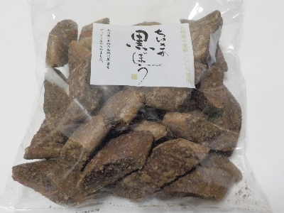
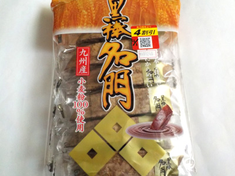
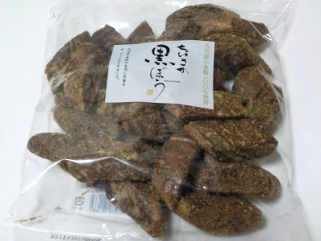

クロボー製菓のちいさか黒ぼうは沢山入っていていいですね。
2024/12/21

夏だと個包装がいいとか冷蔵庫に入れようかって思うんですが、冬は虫の心配がないので気軽に買えます。
小さくて甘い黒棒がパクパク気軽に食べれるのはいいですね。
福岡県久留米市荒木町白口字栗の内1290
2024/12/21

夏だと個包装がいいとか冷蔵庫に入れようかって思うんですが、冬は虫の心配がないので気軽に買えます。
小さくて甘い黒棒がパクパク気軽に食べれるのはいいですね。
2023/10/14

フカフカしてて、ちょっとダックワーズみたいって思いました。
大きいのでマイルドな味付けかなと想像していたんですが、しっかり甘かったです。
１本で満足できました。これをおやつにしたらコスパいいですね。
2026/03/28 また4割引きで154円で購入
2023/09/25

小さくて食べ易い黒棒が沢山入っています。
この商品が砂糖味が強いです。なのでエネルギーチャージにいいと思いました。
冷蔵庫に入れて、ちっとずつ食べてます。